5.10.3. ISP工具指南
5.10.3.1. Control tool 功能说明
Control tool 是isp-tuning 时tuning ISP参数的图形界面工具，其界面示意如图1所示。tuning 人员借助该工具可以查看ISP 状态信息及调整相关模块的参数。
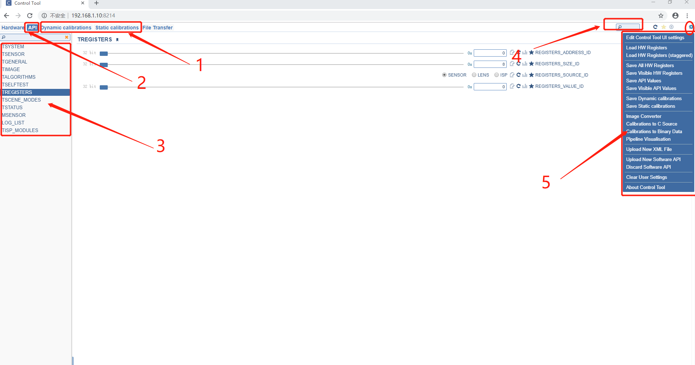
Figure 1: Control tool界面示意图.
图1中主要有calibrations, API等多个模块，各模块说明如表1所示。
| 标号 | 名称 | 说明 | 备注 |
|---|---|---|---|
| 1 | calibration信息 | 有dynamic calibrations / static calibrations 两大类，Save Dynamic calibrations保存动态json，Save Static calibrations保存静态json | tuning 相关参数 |
| 2 | hardware信息 | 通过Save All HW Registers可以保存下来setting.json | ISP硬件寄存器参数 |
| 3 | api 页面 | ||
| 4 | api 相关选项 | 具有若个子项，具体使用方法详见tuning guide 说明 | |
| 5 | 功能搜索选项 | 快速查找相关功能项位置 | |
| 6 | 状态控制选项 | 辅助功能，eg. 将*.json 文件转为*.c 文件用于编译 |
Table 1: Control tool界面功能说明表.
5.10.3.2. Control tool 操作说明
1. 确保X3与PC 网络连接正常，可从PC端ping X3检查网络连接是否正常。
2. 使用串口(或SSH) 登陆X3，将开发包中X3M_SDK/board_support_package/platform_source_code/hbre/sensors目录下对应某个sensor的isp tuning相关的配置文件和启动脚本拷贝到开发板上，以f37 sensor为例，执行sh start_f37.sh脚本启动tuning tool及Control tool server后即可用hobot player预览图像，通过浏览器调试isp参数。
启动命令：./act-server –http-port=8214 –fw-acc=stream –fw-channel=chardev --fw-dev=/dev/ac_isp –hw-acc=stream –hw-buf-size=1024 –hw-channel=devmem --hw-dev=/dev/mem –hw-mem-offset=0xb3000000 –hw-mem-size=0x400000
参数说明如表2所示，需要调整的参数分为firmware, hardware(ISP硬件寄存器)两类，其中firmware使用chardev与驱动交互数据，hardware使用devmem读写ISP寄存器参数。
| 序号 | 参数名 | 参数 | 说明 |
|---|---|---|---|
| 1 | --http-port | 8214 | 网络端口号 |
| firmware | |||
| 2 | --fw-channel | chardev | 通过chardev 与驱动建立连接 |
| 3 | --fw-dev | /dev/ac_isp | 设备名称 |
| 4 | --hw-buf-size | 1024 | buffer大小 |
| 5 | --fw-acc ( firmware access type ) | stream | 通过/dev/ac_isp 使用stream 方式 |
| hardware | |||
| 6 | --hw-channel | devmem | 使用devmem 获取相关寄存器信息 |
| 7 | --hw-dev | /dev/mem | 设备名称 |
| 8 | --fw-acc ( hardware access type ) | stream | hardware access type |
| 9 | --hw-mem-offset | 0xb3000000 | 偏移地址 |
| 10 | --hw-mem-size | 0x400000 | 参数长度 |
Table 2: Control tool server启动参数说明
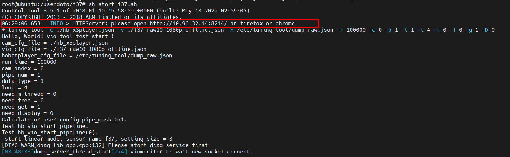
Figure 2: Control tool server成功启动示意图.
3. 使用firefox (或chrome )浏览器访问相应的地址。
note:
(1) 例如X3 IP 地址为10.96.32.14，端口号设置8214， 则访问http://10.96.32.14:8214/，该访问地址可查阅log获取
(2) 若需更新界面选项可点击upload New XML File选项load “IV009-HW-Control.xml”档案建立hardware页面信息；点击upload New Software API选项load “command.json” 建立api 页面。“IV009-HW-Control.xml”和“command.json”档案同工具一起发布。
(3) control-tool不支持根据不同sensor动态适配界面，故设置参数后需读取一次确定设置值是否超过限制，若超过限制则实际设置限制的最大值。
(4)建议使用firefox浏览器，chrome请使用70.0.3538.110版本。
4.多路sensor接入的时候，通过control-tool解码的API->TGENERAL->ACTIVE_CONTEXT,可以选择num对应查看这一路sensor信息。
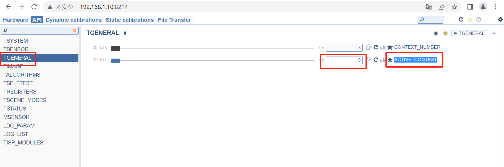
5.10.3.3. Calibration tool 使用说明
5.10.3.4. Calibration tool-Installation
Installation procedure
1. 运行可执行文件“ ISP_Calibration_Tool_Install”。
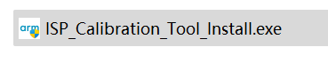
Figure 8: Executable file.
2. 出现如figure 9所示的窗口，单击“Next”。
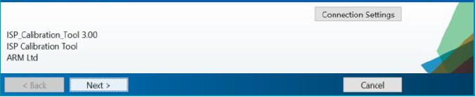
Figure 9: First installation window.
3. 将会出现如figure 10所示的窗口。选择安装文件夹，如果要添加桌面快捷键，请单击“Add a shortcut to the desktop”的选项。
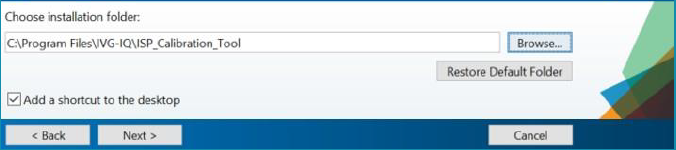
Figure 10: Second installation window.
4. 安装中软件将检测是否已经安装了最新的MATLAB Runtime。如果已安装，将出现一个确认窗口显示状态，然后选择“Next”并继续执行步骤6。否则，将出现Figure 11窗口，选择安装文件夹，然后选择“Next”。
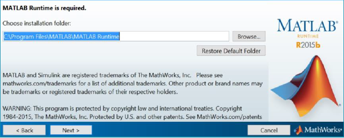
Figure 11: Third installation window.
5. 出现许可协议界面，先选择“Yes” 然后单击“Next”。
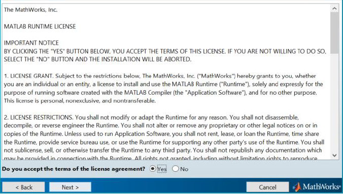
Figure 12: License Agreement window.
6. 将出现一个类似于Figure 13的窗口，选择“Install” 按钮继续安装。
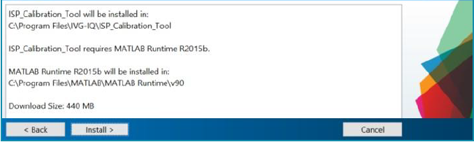
Figure 13: Fourth installation window.
7. 等待安装，完成后请单击“Finish” 按钮，Calibration tool工具安装完成。
5.10.3.5. ISP calibration tool Home window
Home window
运行Calibration Tool，显示 Home窗口如图Figure 14所示。
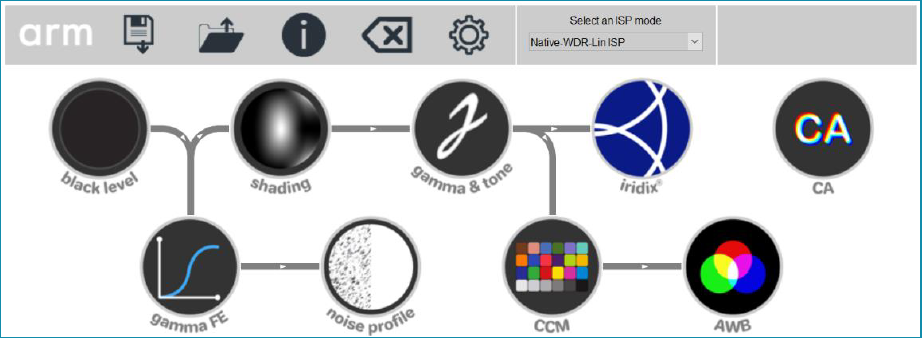
Figure 14: Home window
Calibration tool会根据输入图像和数据生成调试后的寄存器值和查找表（LUT），这些参数会保存在static_calibrations.c文件中（或自定义名称）。
Menu buttons
Table 6列出了Calibration Tool中各个菜单按钮的功能。
| Icon | Name | Function |
|---|---|---|
 |
Information panel | Shows current tuning progress (home window only) |
 |
Save / Export | Save module data to global data (module windows) Export global data to file (home window) |
 |
Open | Load a calibration file you have exported previously |
 |
Information | Open the information document (PDF file) for this window |
 |
Clear | Reset tuning data for this window |
 |
Image format | Set the basic sensor properties, such as resolution and bit depth |
 |
Home | Close the module window and return to the home window (module windows only) |
Table 6: List of all menu bar buttons in the main window and module windows
Getting started
1. 单击 图标，将打开图像格式窗口。按照文中3.1的介绍正确的设置图像格式参数。
图标，将打开图像格式窗口。按照文中3.1的介绍正确的设置图像格式参数。
2. 在主页面中的‘Select an ISP mode’下拉菜单中选择ISP mode。ISP modes是ISP不同模式的简略缩写，建议先在线性模式下进行校准。表7是具体的模式选项，ISP只支持表格中列出的模式。
| Mode name | Meaning |
|---|---|
| Linear ISP | ISP receives linear data from the sensor. Gamma FE and frame stitch blocks are bypassed. |
| FS-Lin ISP | ISP receives linear data with alternating exposures from the sensor. Gamma FE is bypassed. Frame stitch block combines alternate exposures into an HDR image. |
| FS-HDR ISP | ISP receives linear data with alternating exposures from the sensor. Gamma FE converts data into square root companded. Frame stitch block combines alternate exposures into an HDR image in square root domain. |
| Native-WDR-Lin ISP | ISP receives companded HDR data (e.g. piecewise linear) from the sensor. Gamma FE converts data into linear. Frame stitch block is usually disabled. |
| Native-WDR ISP | ISP receives companded HDR data (e.g. piecewise linear) from the sensor. Gamma FE converts data into square root companded. Frame stitch block is usually disabled. |
Table 7: List modes of isp
模式中关键词的解释
Linear表示在忽略sensor errors 和 black level影响条件下，像素亮度值与照度成正比。例如像素检测到的光子数量增加了2倍，则像素亮度值也将增加2倍。
Companded表示像素亮度值与照度不成线性关系，因为sensor内部会把像素亮度值根据设定的函数进行压缩。
Piecewise linear是传感器中使用的压扩函数，该函数使用拐点方式对数字像素值的范围进行划分，每个拐点之间的斜率恒定。
Square root是ISP中使用的压扩函数。利用数学平方根，对输入和输出数据的位深进行缩放，作用在Black level模块后。
3. 首先校准Black Level，然后按照主界面中箭头指示的顺序进行依次操作。箭头显示了各个模块间依赖性。
4. 例如，CCM取决于Gamma和Tone，因此应在CCM之前校准Gamma和Tone。如果以后更改Gamma和Tone校准，则需要重新校准CCM以及其他相关模块。
5. 没有箭头连接的模块完全独立于其他模块。变灰的模块意味着无法使用，带有绿色环的模块表示已经进行了校准。
6. 通过单击ISP模块图标来校准每个模块。
注：工具中模块的重新校准将影响“dynamic calibrations”。关闭工具前，请务必在主窗口中单击Export (floppy disk) icon，否则所有进度将丢失。
5.10.3.6. Calibration tool – Image format
Image format window
在任意一个窗口，当点击image format button (icon)，将会出现如Figure 15的页面。
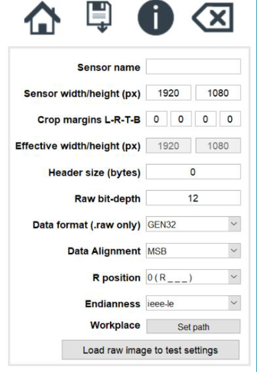
Figure 15: Image format window
Window features
Table 7列出了设置的参数及其含义，这些参数用于配置加载的sensor图像，因此在调试任何模块之前必须首先设置它。
| Region | Function |
|---|---|
| Sensor name | Enter text describing the sensor. This will be used in exported filenames. |
| Image width | Enter the horizontal resolution of the sensor raw files (in pixels) |
| Image height | Enter the vertical resolution of the raw files (in pixels) |
| Header size (bytes) | Enter the length of the raw file header. This is the gap from the start of the file until the first image data and may be 0. |
| Raw bit-depth | Enter the bit-depth of the sensor (typically 10 or 12) |
| Data format (.raw only) | Enter the type of data formatting used by the raw files. This does not apply to .rgb, .ppm or .pgm files. |
| Data alignment | In most data formats, the number of bits used for each pixel is more than the sensor bit depth, so the data is aligned to the MSB (most significant bit) or the LSB (least significant bit). Choose this here. |
| R position | Select the position of the R channel in the file |
| Endianness | Byte order of data within each 16 or 32-bit word (usually “ieee-le”) |
| Workplace – Set path | Set the directory for loading & saving data files |
| Verify settings | Check your settings by loading an image file. Raw images will be converted to color images for display. It is advisable to choose an image with strong colors, to check that “R position” is set correctly. |
Table 7: List of all settings and their meanings in the image format GUI
注：在使用calibration tool中的任何模块之前，请先使用“Verify settings”按钮来检查图像是否正确。 如果正确，请单击“save”按钮。
File types supported
Calibration tool可以使用标准Netpbm格式PPM（扩展名.ppm）和PGM（扩展名.pgm）导入raw（Bayer array)）图像。
Calibration Tool工具可以按照标准JPEG和PNG插值方式进行demosaic处理并生成后缀为.rgb的文件，仅有2个模块CCM和Gamma＆tone会使用到后缀为.rgb的图像。
Output formats
所有支持的格式都使用行优先顺序，图像数据是按从左到右然后从上到下的顺序存储。
Table 8列出了raw 和 rgb 输出格式。星号显示calibration tool支持的格式。“Base mode” 和 “Plane select”列是在ISP中产生此格式的设置。该表假定数据以32-bit字的形式written/read。
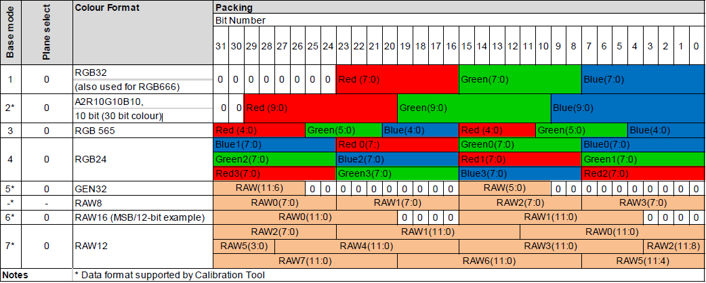
Table 8: ARM output formats
RAW8/16/32
这是一种通用数据格式，可以使用某些第三方工具查看它的二进制格式，每个像素可能占用1,2或4个字节，具体取决于sensor位深。在RAW16中，数据通常在16bit内以MSB对齐（如Table 3所示），因此请将“Data alignment”设置为“MSB”。
GEN32
在这种格式下，像素数据位最多为32-bit字的12bit。最重要的部分是字的第26至31bit。最低有效部分是字的第10到15bit。对于12bit sensor，“Data alignment”设置无效。
RAW12
这种格式，位深最大为12bit，以8个像素为一组被打包为12个bytes（3个32bit words）。 对于12-bit sensor，“Data alignment”设置无效。
A2R10G10B10
扩展名为.rgb的图像文件必须采用这种格式。每个像素存储在一个32bit字中，其中蓝色通道位0-9，绿色通道位10-19，红色通道位20-29。
如果遇到未知其格式信息的RAW文件，可以先使用第三方工具按十六进制打开，会看到具有ASCII码，如Figure 16所示，这样就能获知其像素及分辨率信息。
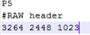
Figure 16: RAW image header
在Figure16例子中获知信息如下:
• 设置图像宽度 3264
• 设置图像高度 2448
• 设置 raw bit-depth 为10 (最大像素值为1023)
通过反复试验找到其他设置。例如：
•如果图像太亮或太暗，请尝试更改“Data alignment”。
•如果通道出现互换，请尝试更改“R position”。